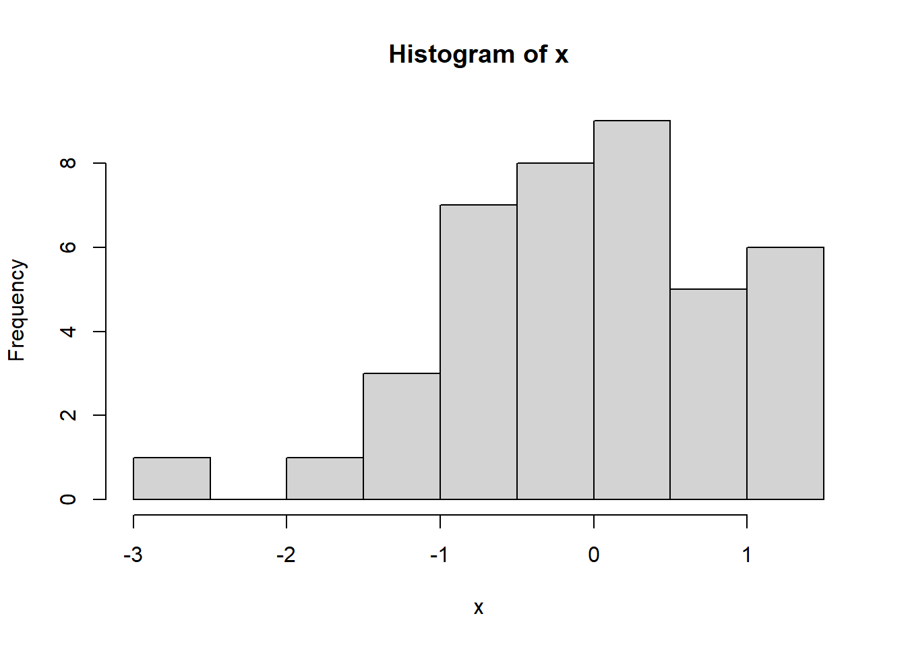

Sección 2 Breve introducción a R
R (R Core Team 2018) es un lenguaje de programación orientado a objetos. Fue creado por Ross Ihaka y Robert Gentleman en 1993 como un dialecto del software S, fue publicado en 1996 (Ihaka and Gentleman 1996). Es un software libre y de código abierto, lo que significa que se puede usar, compartir y modificar el software libremente. Junto con el instalador de R, se distribuyen ciertos paquetes (packages) los cuales incluyen funciones para implementar algunos métodos estadísticos clásicos y modernos. Muchas personas utilizan R para realizar análisis estadísticos por esta razón. Muchos algoritmos y metodologías estadísticas están disponibles para ser implementadas en R, pero se debe buscar en cual paquete está disponible y descargarlo para su utilización.
2.1 Generalidades del ambiente R
R distingue mayúsculas y minúsculas, esto significa que P y p son objetos diferentes. Los comandos elementales consisten en expresiones o asignaciones. Si se ejecuta una expresión el resultado se imprimirá en la consola pero no se guardará dicho valor. Cuando se asigna un valor de una expresión (mediante el comando <-), el resultado no se imprimirá en pantalla y se almacenará en un objeto. Comandos diferentes son separados por ; o por una nueva línea. Un conjunto de comandos pueden estar encerrados entre llaves ({ y }). Los # indican comentarios en el código, todo lo que está a la derecha de este símbolo no será ejecutado por R. Si se desean hacer comentarios en más de una línea, cada una de ellas debe comenzar con #.
Si deseamos guardar en el objeto llamado x el valor de la raíz cuadrada de 10, debemos utilizar la función <-:
x <- sqrt(10) #No se muestra el resultadoPara ver el valor de cualquier objeto, se puede especificar el nombre y ejecutar la línea, por ejemplo si deseamos ver el valor que está almacenado en x debemos escribir y ejecutar:
x #Se muestra el resultado## [1] 3.162278sqrt(10) #Se imprime en la consola el resultado## [1] 3.162278Las funciones son segmentos de código escrito para llevar a cabo una tarea específica, en el ejemplo anterior se utilizó la función sqrt para calcular la raíz cuadrada de 10. Las funciones pueden necesitar argumentos y devolvuelven uno o más valores en el resultado, algunas funciones pueden no devolver ningún resultado visible. Los argumentos de la función son los inputs para ejecutar la tarea. Argumentos deben ir dentro de paréntesis luego del nombre de la función, cada argumento se separa con , ((arg1,arg2 )). Nombres de los argumentos pueden especificarse explicitamente o no. Si no se detalla el nombre del argumento, R entenderá que están en el mismo orden que se especificaron cuando se creó la función. En el caso de sqrt el primer y único argumento de la función es un objeto numerico.
Notar que la mayoría de las funciones de R derivan del inglés y que utiliza . como separador decimal.
##Funciones y comandos básicos
En R se puede ejecutar cualquier operación matemática. Comencemos viendo algunas operaciones básicas:
Suma:
5+2## [1] 7Raíz cuadrada:
sqrt(15)## [1] 3.8729832.1.1 Tablas resumen de operadores y funciones
| Sintaxis | Operación |
|---|---|
x + y |
suma de x e y |
x - y |
diferencia de x e y |
x * y |
multiplicación de x e y |
x / y |
división de x por y |
x %/% y |
parte entera de la división de x por y |
x %% y |
resto de la división de x por y |
x ^ y |
x elevado a y-ésima potencia |
x < y |
x menor que y |
x <= y |
x menor o igual que y |
x > y |
x mayor que y |
x >= y |
x mayor o igual que y |
x == y |
x igual a y |
x != y |
x no es igual a y |
sqrt(x) |
raíz cuadrada de x |
exp(x) |
exponencial de x |
log(x) |
logaritmo natural de x |
log(x, k) |
logaritmo base k de x |
sum(x) |
suma de los elementos de x |
prod(x) |
producto de los elementos de x |
round(x, k) |
x redondeado a k dígitos |
2.1.2 Ayuda
R incluye documentación de ayuda muy detallada. Para acceder a la ayuda de cada función, objeto o datos de prueba se debe ejecutar el comando help() o ?. Por ejemplo help(sqrt), o ?sqrt. Otra forma de pedir la ayuda es presionando F1 luego de seleccionar la función. La sentencia ?? busca un patrón dentro de la documentación del sistema de ayuda, es útil si no se conoce cual función ejecuta cierto análisis. Otra herramienta muy útil para buscar ayuda es Google o Stack Overflow.
help(sqrt)
??square2.1.3 Asignaciones
Como ya se especificó en la sección 2.1, un comando de asignación es <-, donde a la izquierda se especifica el nombre del objeto y a la derecha el valor, ya sean resultados de un cálculo o de un análisis estadístico. Por ejemplo, si se desea asignar el valor de 5 al objeto radio se debe ejecutar radio <- 5. Otras formas de hacer asignaciones es mediante la utilización de = o ->, este último no es utilizado comúnmente.
Asignaremos al objeto x una secuencia numérica del 1 al 5 y luego ver el contenido de x:
x<-c(1,2,3,4,5) #No se muestra el resultado
x #Se auto imprime el resultado
## [1] 1 2 3 4 5
print(x) #Imprime el resultado de manera explícita mediante el comando print
## [1] 1 2 3 4 5Otra formas de asignar valores es utilizando -> o =
c(1,2,3)->x
x## [1] 1 2 3x=c(1,2,3,4)
x## [1] 1 2 3 4
Al utilizar el comando de asignación con el mismo nombre de objeto (x), cada vez que se utilizó ese comando, el valor que contenía previamente se reasignó con el valor nuevo.
2.1.4 R como herramienta estadística
En el paquete stats (uno de los paquetes instalados por defecto) permite entre otras cosas, obtener la densidad, función de distribución (probabilidades), cuantiles y generar números aleatorios de las distribuciones estadísticas más comunes. Por ejemplo, si se desea generar 40 números aleatorios de una distribución normal estándar se deberá ejecutar la sentencia rnorm(40).
Si se desea calcular medidas descriptivas básicas de un vector se puede ejecutar mean para calcular la media, sd para calcular el desvío estándar y var para la varianza. Otra función útil para obtener valores de posición es la función summary.
x<- rnorm(40)
summary(x)## Min. 1st Qu. Median Mean 3rd Qu. Max.
## -1.66647 -0.74200 -0.02098 -0.05684 0.72991 1.300362.1.5 R como herramienta gráfica
Con R se puede realizar gráficos y modificar numerosos parámetros del gráfico para su publicación. Se realizará un histograma y un boxplot de la variable x generada anteriormente.
hist(x)
boxplot(x)Podría decirse que la función más importante para generar gráficos es plot. Permite entre otros, realizar diagramas de dispersión y editar algunos elementos del gráfico.
x <- c(-4,-3,-2,-1,0,1,2,3,4) # Observar que se remplazó el objeto "x" que se generó previamente
y <- x^2
plot(x,y)
plot(x,y, type="b", col="red")
Ejercitación
-
Funciones y comandos básicos
Calcule la raiz cuadrada de 10
Calcule el perimetro del círculo de radio 5 (\(P = 2\pi \times r\))
Calcule 270 dividido la suma entre 12 y 78
Calcule el cuadrado de 8
Calcule el logaritmo de 10
-
Asignaciones y aritmética vectorial
Calcule el perímetro del círculo de radio 5 y guárdelo en el objeto
per.Crear el vector de coordenadas 6,7,8,9,10 y llamarlo
zSuma de dos vectoresCalcular la suma de
zyxCalcular el doble de
x¿Qué se obtiene haciendo el producto entre los vectores
zyx? -
R como herramienta estadística
Generar un vector
ycon 20 realizaciones de una normal con media 5 y desvío estándar 2. Calcular la media y la varianza dey. Realizar un histograma.
Referencias
R Core Team. 2018. R: A Language and Environment for Statistical Computing. Vienna, Austria: R Foundation for Statistical Computing. https://www.R-project.org/.
Ihaka, Ross, and Robert Gentleman. 1996. “R: A Language for Data Analysis and Graphics.” Journal of Computational and Graphical Statistics 5 (3). Taylor & Francis Group:299–314.